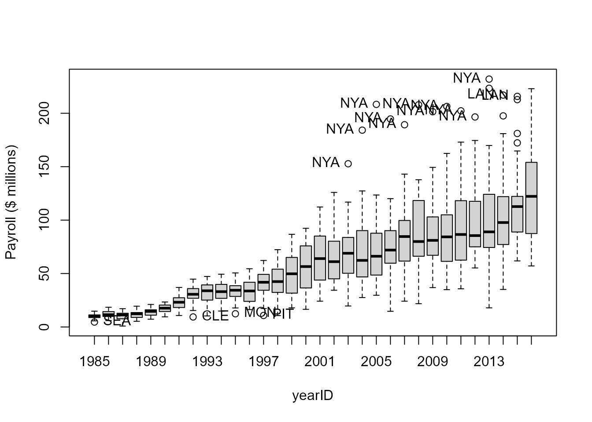
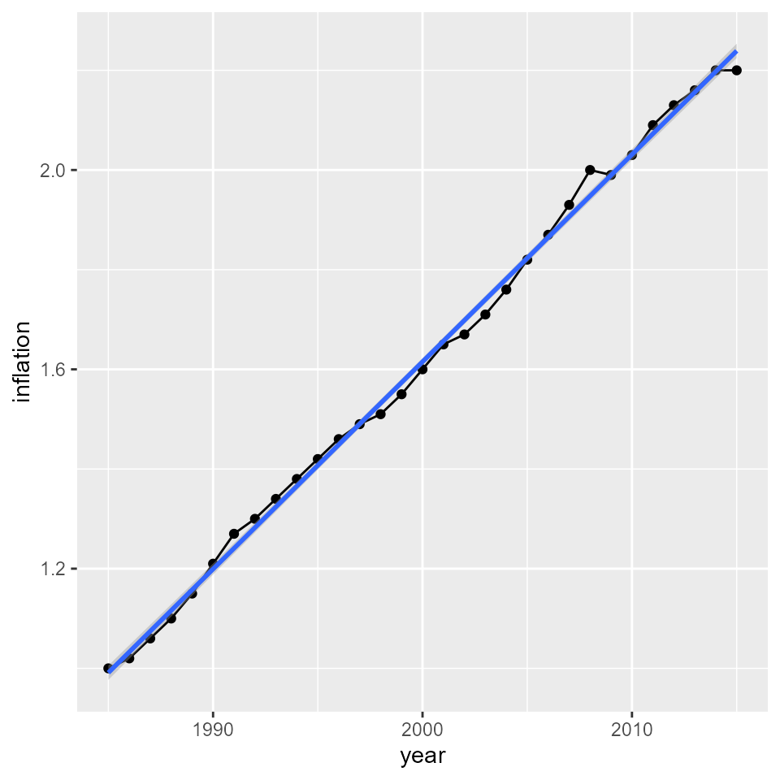
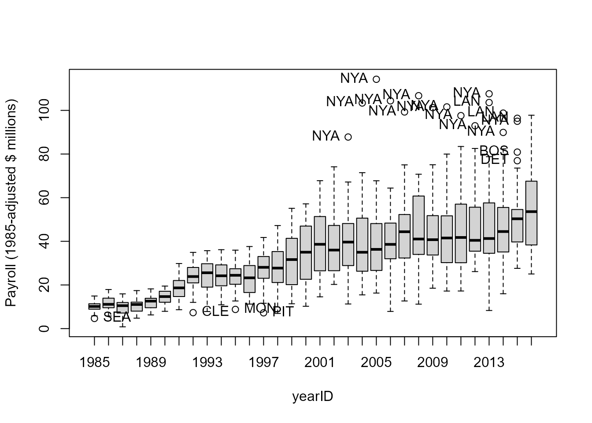
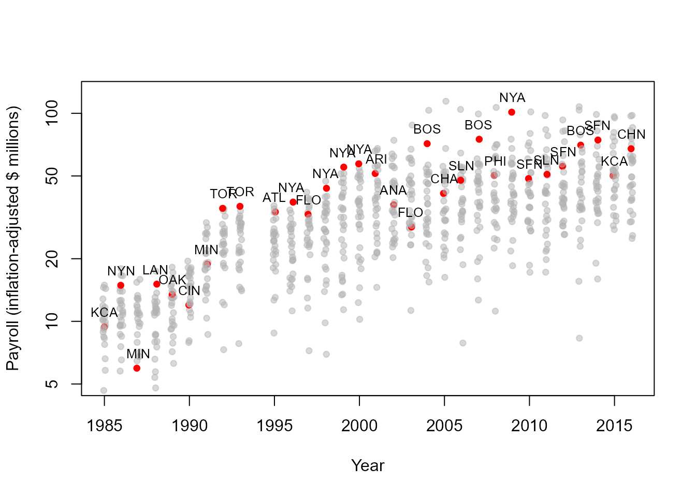

Team Payroll and the World Series
Michael Friendly
2024-11-21
Source:vignettes/payroll.Rmd
payroll.RmdThis vignette examines whether there is a relationship between total
team salaries (payroll) and World Series success. It was inspired by
Nolan & Lang (2015), “Baseball: Exploring Data in a Relational
Database”, Chapter 10 in Data
Science in R. They use SQL on the raw Lahman files
.csv, rather than the Lahman package.
Here, We largely use dplyr for data munging and
ggplot2 for plotting. In the process, we discover a few
errors in the data sets.
The data files
Start with loading the files we will use here. We do some pre-processing to make them more convenient for the analyses done later.
The Salaries data
The Salaries data.frame contains data on all players’
salaries from 1985-2016 in the latest release, v. 12.0.0, of the
Lahman package. (Additions to the Salaries
table in San Lahman’s database were discontinued after 2016.) We use the
sample_n function to display a random sample of
observations.
data("Salaries", package="Lahman")
str(Salaries)
## 'data.frame': 26428 obs. of 5 variables:
## $ yearID : int 1985 1985 1985 1985 1985 1985 1985 1985 1985 1985 ...
## $ teamID : Factor w/ 35 levels "ANA","ARI","ATL",..: 3 3 3 3 3 3 3 3 3 3 ...
## $ lgID : Factor w/ 2 levels "AL","NL": 2 2 2 2 2 2 2 2 2 2 ...
## $ playerID: chr "barkele01" "bedrost01" "benedbr01" "campri01" ...
## $ salary : int 870000 550000 545000 633333 625000 800000 150000 483333 772000 250000 ...
sample_n(Salaries, 10)
## yearID teamID lgID playerID salary
## 1 1995 BAL AL benitar01 125000
## 2 1995 NYA AL fernato01 1633335
## 3 1994 PHI NL chambwe01 350000
## 4 1995 OAK AL aldremi01 430000
## 5 2013 NYN NL wrighda03 10192071
## 6 1996 SEA AL strando01 380000
## 7 1986 BOS AL hoffmgl01 350000
## 8 2003 MIL NL sexsori01 5125000
## 9 1998 NYA AL seabosc01 170000
## 10 1986 ML4 AL higuete01 195000The Teams data
The Teams data.frame contains a lot of information about
all teams that have ever played, with a separate observation for each
year. Here, we will mainly use this to get the team name
(team) from teamID and also to get the
information about World Series winners.
data("Teams", package="Lahman")
dim(Teams)
## [1] 3045 48
names(Teams)
## [1] "yearID" "lgID" "teamID" "franchID"
## [5] "divID" "Rank" "G" "Ghome"
## [9] "W" "L" "DivWin" "WCWin"
## [13] "LgWin" "WSWin" "R" "AB"
## [17] "H" "X2B" "X3B" "HR"
## [21] "BB" "SO" "SB" "CS"
## [25] "HBP" "SF" "RA" "ER"
## [29] "ERA" "CG" "SHO" "SV"
## [33] "IPouts" "HA" "HRA" "BBA"
## [37] "SOA" "E" "DP" "FP"
## [41] "name" "park" "attendance" "BPF"
## [45] "PPF" "teamIDBR" "teamIDlahman45" "teamIDretro"We are only going to use the observations from 1985 on, and a few
variables, so we filter and select them now. Keep only the levels of
teamID in the data.
Teams <- Teams %>%
select(yearID, lgID, teamID, name, divID, Rank, WSWin, attendance) %>%
filter(yearID >= 1985) %>%
mutate(teamID = droplevels(teamID))
sample_n(Teams, 10)
## yearID lgID teamID name divID Rank WSWin attendance
## 1 1999 NL LAN Los Angeles Dodgers W 3 N 3095346
## 2 2016 AL SEA Seattle Mariners W 2 N 2267928
## 3 1988 NL MON Montreal Expos E 3 N 1478659
## 4 2010 NL CIN Cincinnati Reds C 1 N 2060550
## 5 1997 AL DET Detroit Tigers E 3 N 1365157
## 6 2023 AL DET Detroit Tigers C 2 N 1612876
## 7 2015 NL PIT Pittsburgh Pirates C 2 N 2498596
## 8 1995 AL DET Detroit Tigers E 4 N 1180979
## 9 1992 AL BOS Boston Red Sox E 7 N 2468574
## 10 2005 NL ATL Atlanta Braves E 1 N 2521167The SeriesPost data
Post season records go back to 1884. There are 389 observations covering all aspects of post-season play.
data("SeriesPost", package="Lahman")
names(SeriesPost)
## [1] "yearID" "round" "teamIDwinner" "lgIDwinner" "teamIDloser"
## [6] "lgIDloser" "wins" "losses" "ties"For each year, there are number of observations for the various levels of post-season play (Division titles, League titles, etc. A number of these designations have changed over the years, and I don’t know what they all mean.)
table(SeriesPost$round)
##
## AEDIV ALCS ALDS1 ALDS2 ALWC ALWC1 ALWC2 ALWC3 ALWC4 AWDIV CS NEDIV NLCS
## 1 54 29 29 9 3 3 1 1 1 1 1 54
## NLDS1 NLDS2 NLWC NLWC1 NLWC2 NLWC3 NLWC4 NWDIV WS
## 29 29 9 3 3 1 1 1 126We are interested only in the World Series (WS), which
was first played in 1903. We filter for the years for which we have
salary data, and drop a couple of variables. The league IDs of the
winner and loser are factors, so we use droplevels to
include only the levels in recent history.
WS <- SeriesPost %>%
filter(yearID >= 1985 & round == "WS") %>%
select(-ties, -round) %>%
mutate(lgIDloser = droplevels(lgIDloser),
lgIDwinner = droplevels(lgIDwinner))
dim(WS)
## [1] 38 7
sample_n(WS, 6)
## yearID teamIDwinner lgIDwinner teamIDloser lgIDloser wins losses
## 1 1988 LAN NL OAK AL 4 1
## 2 2023 TEX AL ARI NL 4 1
## 3 2006 SLN NL DET AL 4 1
## 4 2005 CHA AL HOU NL 4 0
## 5 1987 MIN AL SLN NL 4 3
## 6 2016 CHN NL CLE AL 4 3A first look at Salaries
How many players do we have in each year?
table(Salaries$yearID)
##
## 1985 1986 1987 1988 1989 1990 1991 1992 1993 1994 1995 1996 1997 1998 1999 2000
## 550 738 627 663 711 867 685 769 923 884 986 931 925 998 1006 836
## 2001 2002 2003 2004 2005 2006 2007 2008 2009 2010 2011 2012 2013 2014 2015 2016
## 860 846 827 831 831 819 842 856 813 830 839 848 815 802 817 853What is the range of salaries, across all years?
range(Salaries$salary)
## [1] 0 33000000And, year by year?
Salaries %>%
group_by(yearID) %>%
summarise(min=min(salary),
max=max(salary))
## # A tibble: 32 × 3
## yearID min max
## <int> <int> <int>
## 1 1985 60000 2130300
## 2 1986 60000 2800000
## 3 1987 62500 2127333
## 4 1988 62500 2340000
## 5 1989 62500 2766667
## 6 1990 100000 3200000
## 7 1991 100000 3800000
## 8 1992 109000 6100000
## 9 1993 0 6200000
## 10 1994 50000 6300000
## # ℹ 22 more rowsHmm, there is a salary==0 in 1993, maybe there are
others.
which(Salaries$salary==0)
## [1] 6180 12008Who are they? (We could also look up their playerIDs in
Lahman::People.)
Salaries[which(Salaries$salary==0),]
## yearID teamID lgID playerID salary
## 6180 1993 NYA AL jamesdi01 0
## 12008 1999 PIT NL martija02 0These must be errors. Get rid of them. Reminder: Check further; maybe file an issue in the Lahman package!
Get team payrolls
We want to sum the salary for each team for each year.
We might as well make it in millions. All those zeros hurt my eyes.
payroll <- Salaries %>%
group_by(teamID, yearID) %>%
summarise(payroll = sum(salary)/1000000)
head(payroll)
## # A tibble: 6 × 3
## # Groups: teamID [1]
## teamID yearID payroll
## <fct> <int> <dbl>
## 1 ANA 1997 31.1
## 2 ANA 1998 41.3
## 3 ANA 1999 55.4
## 4 ANA 2000 51.5
## 5 ANA 2001 47.5
## 6 ANA 2002 61.7Merge team names into payroll
It will be more convenient to have the team names included in the
payroll data.frame. The Teams data frame also
contains the Y/N indicator WSWin for World
Series winners, so we might as well include this too.
payroll <- merge(payroll, Teams[,c("yearID", "teamID","name", "WSWin")],
by=c("yearID", "teamID"))
sample_n(payroll, 10)
## yearID teamID payroll name WSWin
## 1 2006 MIN 63.40 Minnesota Twins N
## 2 2007 MIL 70.99 Milwaukee Brewers N
## 3 2016 LAA 137.25 Los Angeles Angels of Anaheim N
## 4 2005 OAK 55.43 Oakland Athletics N
## 5 2003 FLO 49.45 Florida Marlins Y
## 6 2009 COL 75.20 Colorado Rockies N
## 7 2000 MIL 36.51 Milwaukee Brewers N
## 8 1999 ANA 55.39 Anaheim Angels N
## 9 2013 NYA 231.98 New York Yankees N
## 10 1989 CAL 15.10 California Angels NNote that we could also do this using left_join in the
dplyr package. There is probably a more tidy
way to subset the variables from the Teams data set than
using Teams[, c()], but, hey– this works.
left_join(payroll, Teams[,c("yearID", "teamID","name", "WSWin")],
by=c("yearID", "teamID")) %>%
sample_n(10)WSWin is a character variable. Convert it to a
factor.
Check the values:
table(payroll$WSWin, useNA="ifany")
##
## N Y <NA>
## 859 31 28There is something wrong here! There shouldn’t be any
NAs. We leave this for further study, and another
Reminder to file an issue if we figure out what the
problem is.
Boxplots of payroll
Let’s look at the distributions of payroll by year. The observations are teams.
boxplot(payroll ~ yearID, data=payroll, ylab="Payroll ($ millions)")
What are the outliers? Are there any teams that crop up repeatedly?
car::Boxplot makes this easy, and also returns the labels
of the outliers. We don’t load the car package, because
car also contains a Salary dataset.
out <- car::Boxplot(payroll ~ yearID, data=payroll,
id=list(n=1,
labels=as.character(payroll$teamID)),
ylab="Payroll ($ millions)")
Most of the outliers are the New York Yankees (NYA):
table(out)
## out
## CLE LAN MON NYA PIT SEA
## 1 2 1 11 1 1Payroll has obviously increased dramatically over time. So has the
variability across teams. For any modelling, we would probably want to
use \log(payroll). We might also want to look separately at
the American and National leagues.
Correcting for inflation
For proper comparisons, we should correct for inflation. Lets do this by scaling salary back to 1985 dollars, The data below gives inflation rates for all subsequent years. It comes from Nolan & Lang, extended to 2015 using (https://www.in2013dollars.com/).
inflation = c(1, 1.02, 1.06, 1.10, 1.15, 1.21,
1.27, 1.30, 1.34, 1.38, 1.42, 1.46, 1.49, 1.51, 1.55, 1.60,
1.65, 1.67, 1.71, 1.76, 1.82, 1.87, 1.93, 2.00, 1.99, 2.03,
2.09, 2.13, 2.16, 2.20, 2.20 )
inflation.df <- data.frame(year=1985:2015, inflation)
# plot inflation rate
ggplot(inflation.df, aes(y=inflation, x=year)) +
geom_point() +
geom_line() +
geom_smooth(method="lm")
This is close enough to linear, that we could use the linear
regression predicted value as a simple computation of the inflation
rate. (A better way, of course, would be to use the actual inflation
rate; this would entail merging payroll with
inflation.df by year, and doing the computation.)
infl.lm <- lm(inflation ~ year, data=inflation.df)
(coefs <- coef(infl.lm))
## (Intercept) year
## -81.57032 0.04159Scale payroll by dividing by linear prediction of
inflation rate, producing payrollStd.
Boxplot again, of inflation-adjusted payroll. The increase after 2000 doesn’t seem so large.
car::Boxplot(payrollStd ~ yearID, data=payroll,
id = list(labels=as.character(payroll$teamID)),
ylab="Payroll (1985-adjusted $ millions)")
## [1] "SEA" "CLE" "MON" "PIT" "NYA" "NYA" "NYA" "NYA" "NYA" "NYA" "NYA" "NYA"
## [13] "NYA" "NYA" "LAN" "NYA" "LAN" "NYA" "BOS" "DET" "LAN" "NYA"Salaries of World Series winning teams
To what extent are the World Series winners those among the highest in payroll? A simple way to look at this is to plot the team payrolls across years, and mark the World Series winner for each year.
This plot shows inflation-adjusted payroll on a log scale to avoid the dominating influence of the most recent years. We jitter the points to avoid overplotting, and use a transparent gray color for the non-winners, red for the winner in each year.
Cols <- ifelse(payroll$WSWin=='Y', "red", gray(.7, alpha=0.5))
with(payroll, {
plot(payrollStd ~ jitter(yearID, 0.5),
ylab = "Payroll (inflation-adjusted $ millions)",
ylim = c(5,125), log = "y",
xlab = "Year",
pch = 19, cex = 0.8, col = Cols)
})
with(payroll[payroll$WSWin == 'Y',],
text(y = payrollStd, x = yearID, labels = teamID, pos = 3, cex = 0.8) )
By and large, the World Series winners tend to be in the upper portion of the payrolls for each year.
Further analyses: Your turn
Here are some questions to provoke further analyses of these data sets. If you find something interesting, post it in a Github Gist or forward it to Team Lahman as in a Lahman issue.
Our boxplots used total payroll in millions. Would the plots be clearer if we plotted payroll on a log scale?
Follow-up the suggestion to fit a linear model predicting
log(payroll)from some of the available predictors.Examine the trend of team salaries over time for World Series losers. Does it look the same or different than that for the winning teams?
What kind of analysis would you do to address this statement: “For teams that make it to the World series, the one with the larger payroll is more likely to win.”
Is there any relationship between the number of team wins in a season and winning the World series?